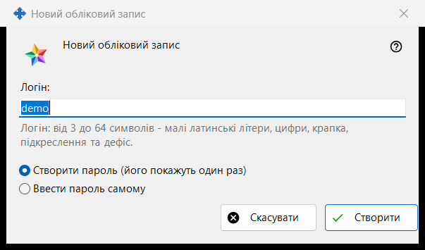
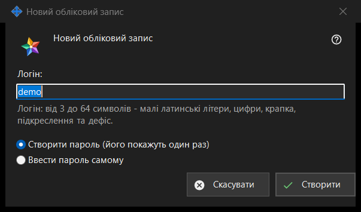

Новий обліковий запис
Призначення
Одне вікно у двох режимах. «Новий обліковий запис» додає обліковий запис на Media Exchange Server, яким ви керуєте; «Скидання пароля: <логін>» задає наявному обліковому запису новий пароль. Режими відкриваються кнопками «Додати обліковий запис..» і «Скинути пароль..» під списком облікових записів на сторінці Media Exchange Server у налаштуваннях Share Manager; для скидання потрібно вибрати обліковий запис.


Порядок дій
- У режимі додавання введіть логін.
- Виберіть, як створюється пароль.
- У режимі скидання вирішіть, чи виводити із системи всі пристрої облікового запису.
- Натисніть «Створити» або «Скинути».
- Скопіюйте створений пароль у наступному вікні або введіть свій.
Елементи вікна
Заява для першого запису
Для самого першого облікового запису вікно починається з рядка «Перш ніж створити перший обліковий запис, прочитайте, що бачить оператор сервера:» і поля лише для читання із цією заявою. Для наступних записів і для скидання її немає.
Логін
Лише в режимі додавання. Від 3 до 64 символів: малі латинські літери, цифри, крапка, підкреслення та дефіс; великі перетворюються на малі. Підказка набуває кольору попередження, коли текст не може бути логіном, і «Створити» не продовжує роботу, якщо він не підходить.
Як створюється пароль
«Створити пароль (його покажуть один раз)» вибрано за замовчуванням: програма робить випадковий пароль, що відповідає правилам, і наступне вікно показує його один раз. «Ввести пароль самому» відкриває вікно «Пароль облікового запису», де рядок під полем одразу називає, чого бракує: не коротше 10 символів, із великою та малою латинською літерою і цифрою.
Вихід усіх пристроїв
Лише в режимі скидання. Прапорець «Одразу вивести із системи всі пристрої цього облікового запису» стоїть за замовчуванням. Тоді рядок підсумку повідомляє, що пароль змінено й усі пристрої облікового запису виведено із системи; без прапорця - лише що пароль змінено.
Після відповіді сервера
Рядок підсумку повідомляє про створення облікового запису. Створений пароль один раз показується в окремому вікні з кнопками «Скопіювати пароль» і «Задати свій пароль..», яка повертає до скидання з уведенням пароля вручну. Якщо ввімкнено «Зберігати паролі облікових записів на цьому ПК», пароль додатково зберігається на цьому ПК, і в облікового запису з'являється «Показати пароль..». Якщо ця збірка пропонує клієнтські можливості обміну, а в цього ПК немає власного облікового запису, ПК входить із цим паролем як перший пристрій облікового запису.
Налаштування менеджера · Налаштування спільного доступу SFTP · Налаштування сервера обміну